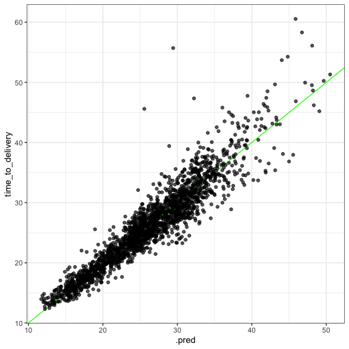

rbe is an implementation of the RuleFit model of Friedman and Popescu (2008) that uses modern boosting methods such as XGBoost, LightGBM, and CatBoost.
The model has two parts:
- A boosted tree that generates a set of rules, which are logical statements that describe the variables used to get to the terminal nodes of the tree.
- A regularized generalized linear model that takes the original predictors as well as a large set of binary indicators generated from the rule set.
Installation
You can install the released version of rbe from CRAN with:
install.packages("rbe")You can install the development version of rbe from GitHub with:
pak::pak("tidymodels/rbe")The xgboost and lightgbm packages are on CRAN. The catboost package is not on CRAN; see the catboost installation instructions to install it.
Example
This example fits a RuleFit model to predict delivery times. The rules are made with xgboost:
set.seed(273)
in_train <-
modeldata::deliveries |>
nrow() |>
sample.int(8000)
delivery_train <- modeldata::deliveries[in_train, ]
delivery_test <- modeldata::deliveries[-in_train, ]
set.seed(871)
rf_fit <- rule_ensemble(time_to_delivery ~ ., data = delivery_train, method = "xgboost")
rf_fit
#> RuleFit Using XGBoost
#>
#> Training Set:
#> ℹ Samples: 8000
#>
#> ℹ Predictors: 30
#>
#> ℹ Rules: 222
#>
#>
#> Arguments:
#> • trees: 50
#>
#> • mtry: 1
#>
#> • learn_rate: 0.01
#>
#> • tree_depth: 4
#>
#> • min_n: 5
#>
#> • penalty: 0.001
#>
#> • mixture: 1
#>
#> • verbose: FALSE
#>
#> • counts: FALSE
rf_pred <-
predict(rf_fit, new_data = delivery_test) |>
dplyr::bind_cols(delivery_test)
library(ggplot2)
rf_pred |>
ggplot(aes(.pred, time_to_delivery)) +
geom_abline(col = "green") +
geom_point(alpha = 2 / 3) +
theme_bw()
Code of Conduct
Please note that the rbe project is released with a Contributor Code of Conduct. By contributing to this project, you agree to abide by its terms.